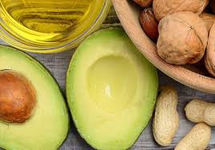
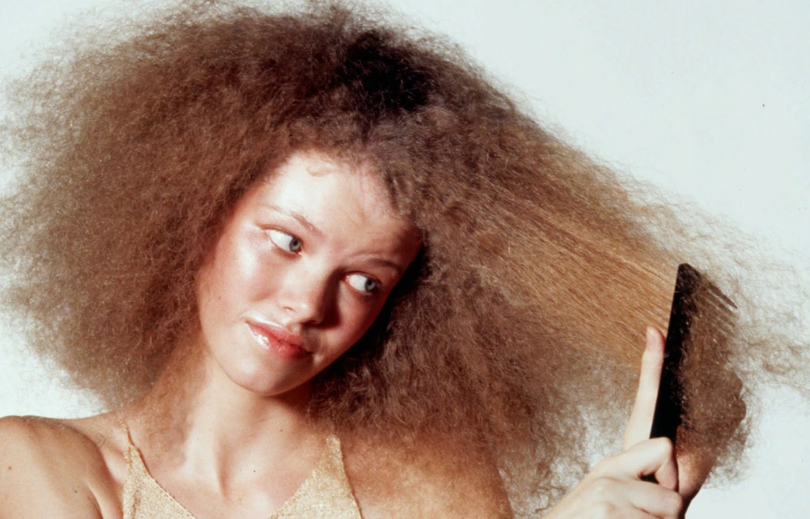

O Que É?
A nutrição capilar é um componente essencial dos cuidados com os cabelos,
que visa a fornecer os nutrientes necessários para manter a saúde, o brilho e
a força dos fios. É um processo que envolve a aplicação de produtos ricos em
vitaminas, minerais e outros compostos essenciais para nutrir o cabelo a
partir de dentro e de fora.

Importância:
A importância da nutrição capilar reside no fato de que os cabelos
precisam de nutrientes para crescer, manter sua integridade e resistência,
e para se manterem com uma aparência saudável e brilhante. A falta de
nutrientes adequados pode resultar em cabelos frágeis, opacos e propensos a
problemas, como quebra e pontas duplas.
Quando há necessidade?
A nutrição capilar deve ser uma parte regular da rotina de cuidados com
os cabelos, adaptando-se às necessidades individuais. Ela pode ser realizada
através de diferentes métodos, incluindo máscaras de nutrição, condicionadores
com ingredientes nutritivos e até mesmo ajustes na dieta, que também
desempenham um papel crucial na nutrição capilar.
A nutrição capilar é especialmente importante para cabelos que estão
danificados, ressecados ou quebradiços devido a tratamentos químicos,
exposição ao sol, uso de calor excessivo, entre outros fatores. Também
é benéfica para aqueles que têm cabelos naturalmente mais secos e que
precisam de um reforço de hidratação e nutrientes. Além disso, a nutrição
capilar pode ser útil para prevenir problemas capilares, como a queda de
cabelo.
Prejuízos de não fazer:
A negligência em fornecer os nutrientes essenciais para o cabelo pode
resultar em uma série de prejuízos, tais como:
- Cabelos Frágeis: A falta de nutrientes enfraquece os fios, tornando-os
mais propensos a quebras e danos.
- Aparência Sem Vida: A falta de nutrientes pode deixar o cabelo opaco,
áspero e sem brilho.
- Problemas no Couro Cabeludo: A falta de nutrientes pode levar a
problemas no couro cabeludo, como coceira e caspa.
- Perda de Cabelo: A nutrição deficiente pode contribuir para a queda de
cabelo e a falta de crescimento saudável dos fios.
Portanto, a nutrição capilar desempenha um papel fundamental na manutenção
da saúde e da beleza dos cabelos. A incorporação regular de produtos e práticas
de nutrição capilar na rotina de cuidados é vital para garantir que os fios
permaneçam fortes, vibrantes e com uma aparência saudável ao longo do tempo.
